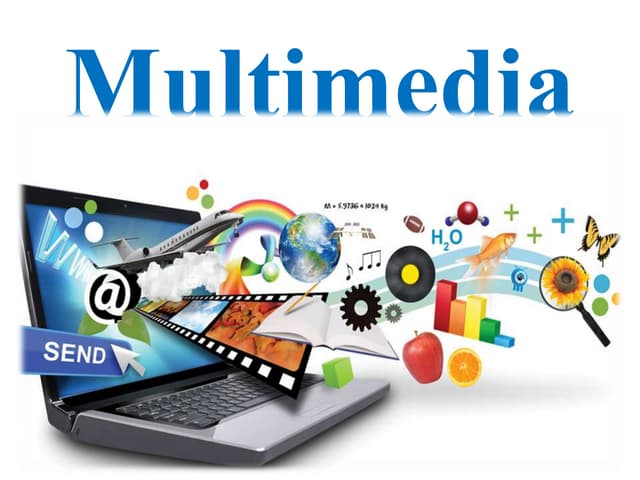
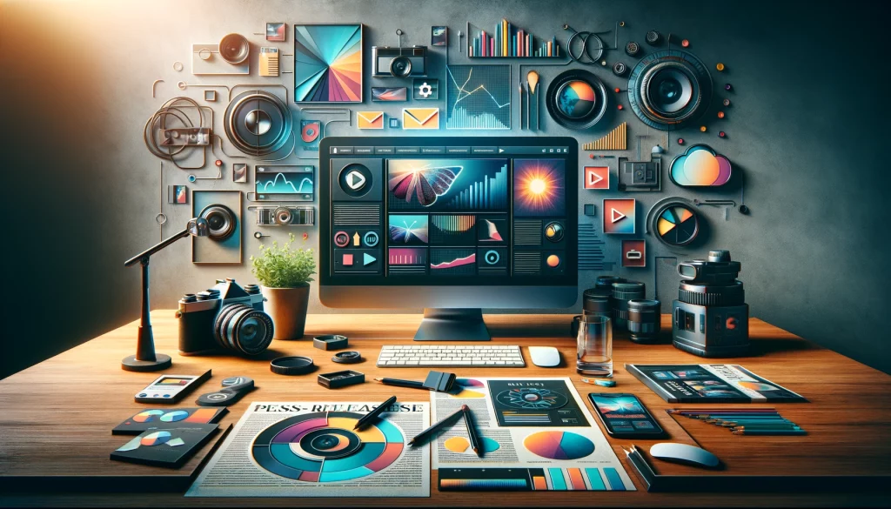
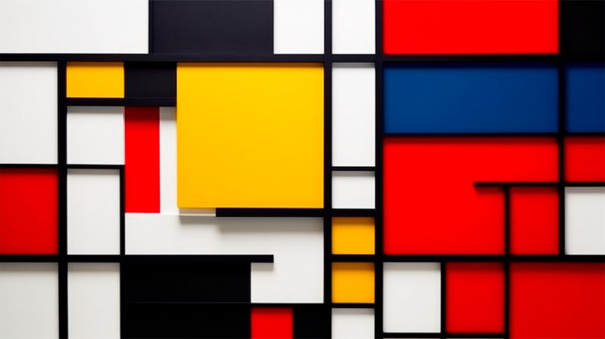

El estudio
Cuatro diseñadores, un mismo taller.
Unimos arte y código para crear marcas con carácter.
Entendieron mi idea desde el primer día. Cliente, Festival Nube

Servicios
- Ilustración digital: personajes y escenas.
- Motion graphics: títulos y videos cortos.
- Diseño de marca: logos y manuales.
- Sitios web: páginas a medida.
Para quién trabajamos
Emprendedores, festivales y galerías.

Proceso
- Conversamos y definimos el brief.
- Proponemos un concepto visual.
- Producimos las piezas.
- Entregamos y damos soporte.
Los proyectos pequeños se entregan en dos semanas.

Contacto
Escríbenos a estudio@kdestudios.example.